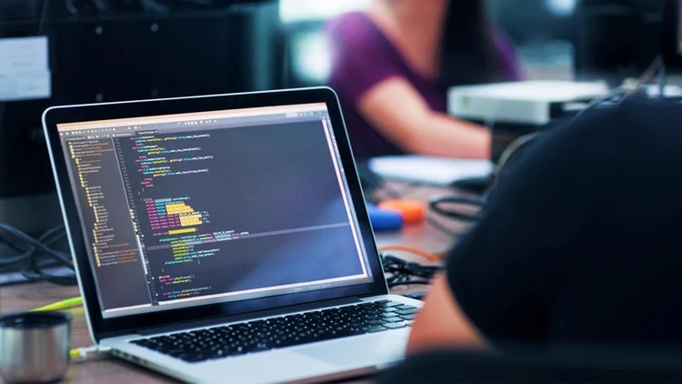

Hei, olen Sharmila Yadav, intohimoinen web-kehittäjä. Osaan käyttää HTML:ää, CSS:ää, JavaScriptiä ja Reactia. Erikoistun modernien, responsiivisten ja käyttäjäystävällisten verkkosivustojen luomiseen. Minulla on kokemusta työkaluista, kuten WordPressistä ja Material-UI:sta, ja pidän visuaalisesti kauniiden ja toimivien ratkaisujen rakentamisesta. Olen tehnyt erilaisia projekteja, kuten verkkosivustojen ja mobiililaitteille sopivien sivujen kehitystä. Olen aina innokas oppimaan uutta ja tutustumaan uusiin teknologioihin. Tavoitteeni on osallistua merkityksellisiin projekteihin ja kehittää taitojani jatkuvasti web-kehityksen alalla.
Urani alkoi kiinnostuksesta teknologiaan ja ongelmanratkaisuun. Tämä johti siihen, että opiskelin tietokonetekniikan kandidaatiksi. Opintojen aikana huomasin, että pidän erityisesti web-kehityksestä, koska siinä voi yhdistää luovuuden ja tekniset taidot. Idea siitä, että voin rakentaa toimivia ja kauniita verkkosivustoja, innosti minua, ja päätin keskittyä alaan. Valmistumisen jälkeen jatkoin osaamiseni kehittämistä opiskelemalla IT-alaa Rasekossa ja osallistumalla full stack -kehityksen koulutukseen Turun yliopistossa. Olen tehnyt monia projekteja HTML:sta, CSS:sta, JavaScriptin, Pythonin ja Reactin avulla. Harjoitteluni Aashvi Oy:ssä oli erityisen tärkeä vaihe, sillä opin siellä käyttämään Reactia ja Material-UI:ta modernien ja toimivien verkkosovellusten rakentamiseen. Matkani aikana olen jatkuvasti halunnut oppia uutta ja kehittyä. Käytän usein verkkokursseja ja muita oppimistyökaluja pysyäkseni ajan tasalla. Web-kehitys antaa minulle mahdollisuuden yhdistää tekniset taitoni ja luovuuteni, mikä motivoi minua joka päivä. Olen innostunut jatkamaan matkaani, oppimaan lisää ja tekemään merkityksellisiä projekteja IT-alalla.
I am learning new technologies every day, including HTML, CSS, JavaScript, and more...
Päiväni kehittäjänä alkaa kupillisella kahvia ja päivän tehtävien suunnittelulla. Aamuisin olen kaikkein tuotteliain, joten keskityn silloin koodaukseen, ongelmien ratkaisuun ja ominaisuuksien rakentamiseen HTML:sta, CSS:sta, JavaScriptin ja Reactin avulla. Pidän siitä, että voin luoda käyttäjäystävällisiä ja toimivia verkkosivustoja. Iltapäivällä käytän aikaa oppimiseen ja taitojeni kehittämiseen. Hyödynnän Udemyä, YouTubea ja muita verkkosivustoja oppiakseni uusia työkaluja ja web-kehityksen trendejä. Jokainen päivä on täynnä luovuutta, ongelmanratkaisua ja jatkuvaa oppimista, ja nautin siitä, että voin muuttaa ideat toimiviksi verkkoratkaisuiksi!
Oppiminen on jatkuva matka, ja pidän siitä, että voin seurata edistymistäni. Käytän päivittäin aikaa
uusien
työkalujen,
käsitteiden ja web-kehityksen trendien oppimiseen. Olipa kyse React-komponenttien harjoittelusta,
JavaScript-taitojeni
parantamisesta tai uusien suunnittelutyökalujen kokeilemisesta, jokainen askel vie minua eteenpäin
kehittäjänä.
Hyödynnän oppimisessa esimerkiksi Udemyä, YouTubea ja muita verkkokursseja. Kirjoittaminen
oppimastani
auttaa minua
ymmärtämään asioita paremmin ja seuraamaan kehitystäni. Tämä päiväkirja on tapa pitää itseni
motivoituneena
ja nähdä,
kuinka paljon olen edistynyt. Päivitän tätä sivua säännöllisesti uusilla oivalluksilla ja
kokemuksilla—pysy
kuulolla!
Lataan koodausprojektejani säännöllisesti GitHubiin. Voit nähdä projektini GitHub-profiilistani! .